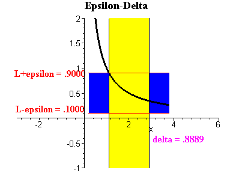

Back to Home
Keaton Hawkins AP Calculus AB Final
In learning about different types of functions, we often come across functions that are said to be "undefined" at a certain value of x. For instance, we learn early on in algebra that dividing any number by 0 won't evaluate to an exact answer... we just say it is undefined. So, the function f(x) = 1/x will be undefined at a value of x = 0, and the function 3/(x+3) will be undefined at a value of x = -3. Graphically, this translates to the presence of asymptotes in those two functions:
Such asymptotes are discontinuities in the graph, and they're nonremovable in the sense that no amount of algebraic manipulation is going to eliminate them. You can't make the function 1/x defined at 0 by manipulating the function algebraically. There are, however, some functions with discontinuities that can be removed using algebraic manipulation. For instance:
At first glance, this function appears to be undefined at x = 2, because plugging x = 2 results in dividing by zero. However, you might realize that you can factor the numerator and cancel out one of the factors with the denominator:
So you can remove the undefined point by manipulating the function algebraically. Remember though, as the original function was written, it is still undefined at the point x = 2. Graphically, this manifests as a "hole" in the graph at the undefined point.
Given this graphical representation, it might seem reasonable to ask, "what would the value of this function be at the undefined point, if it were to continue through that point?" That is, in large part, what limits strive to do. Instead of directly asking for the value of a function at a given point, you can take the limit of a function at a certain point in order to see what the function approaches as x approaches the value you want to consider. In our graph above, if we wanted to ask what the value of our function f(x) is as x approaches 2, we would write:
This is read as "the limit as x approaches 2 of (x2 + x - 6) / (x-2)." All it means is that we're asking what value the function approaches as x gets closer and closer to x = 2. We can see from our graph above that this limit is 5, and we can also solve the limit by simplifying the equation to x + 3, and then plugging in 2. In fact, if you're taking the limit of any function that is perfectely continuous, without any holes or asymptotes, you can just plug in the value that x is approaching. However, limits are mainly used to analyze functions that aren't continuous. Otherwise, why would you be asking for the value that the function approaches as x approaches a given number, instead of just asking what the value of the function is at a particular value for x?
Finding the value that a function approaches at a hole isn't the only type of useful limit. It can also be useful to analyze how a function behaves at its ends. That is, we can take the limit of a function as it approaches infinity. Some functions, like y = x just approach infinity as x goes to infinity. Others, though, approach a concrete, finite value. For instance, consider the function f(x) = 1/x. That function has a horizontal asymptote at y = 0. As x increases with no bound, the function gets closer and closer to 0. So, we can say:
Often times, though, a limit cannot be computed because it does not exist. For instance, the limit as x approaches 0 of the function 1/x doesn't exist. From the right side, the function heads up to infinity. If it also went to infinity from the left side, we would say the limit is equal to positive infinity. However, from the left side of x = 0, the function goes in the opposite direction down to negative infinity. Because two different values are approached from the left side and the right side, we say the limit as x approaches 0 of 1/x doesn't exist. The same is true for the limit as x approahces 2 of the function below:
As x approaches 2 from the left, the function approaches 4. But as x approaches 2 from the right, the function approaches 7. Because the function approaches two different numbers from the left and right of x = 2, we say that the limit at x = 2 doesn't exist. This idea relates to the formal definition of a limit, too. Consider the function y = x2. Suppose you wanted to take the limit of that function as x approaches zero. To do this, let's think about a small range of x values around 0. This range is represented by the lowercase Greek letter delta, δ. At each value of x within that range, we can choose a corresponding value of the function. The vertical range between the function's value at the lower end of the δ range and the function's value at the upper end of the δ range is also given a name. We use the Greek letter epsilon to represent this vertical range: ε.
We say that the limit of the function exists at a given point if, as we decrease the δ to zero, the ε range also decreases to zero. Look at the animation below. See how both the horizontal range (yellow) and the vertical range (blue) shrink to nothing, and seem to zero in on one value on the function? That's how we know the limit exists at that point. Alternatively, in the function above, the δ range goes to zero, but the ε range can only get as small as the distance between the value that the function approaches from the right and the value that the function approaches from the left. It doesn't zero in on one particular value like the animation below, so the limit doesn't exist.
